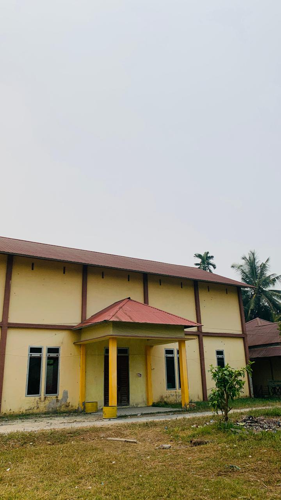

PERJALANAN DESA
Kisah dan perkembangan Desa Serindang dari masa ke masa.
HISTORY

Desa Serindang berkembang dari kehidupan masyarakat yang membangun permukiman dan kehidupan bersama di wilayah desa. Semangat kebersamaan dan gotong royong menjadi bagian penting dalam kehidupan masyarakat.
Seiring berjalannya waktu, Desa Serindang terus mengalami perkembangan dalam berbagai bidang seperti pendidikan, ekonomi, pembangunan, pemerintahan, dan kehidupan sosial masyarakat.
Saat ini Desa Serindang terus berkembang dengan memanfaatkan potensi masyarakat, lingkungan, serta kemajuan teknologi. Masyarakat bersama-sama menjaga kebersamaan dan membangun desa.
Desa Serindang diharapkan dapat terus meningkatkan pembangunan, pendidikan, ekonomi masyarakat, dan pengembangan potensi lokal untuk menciptakan desa yang semakin maju.
SERINDANG
Kebersamaan dan gotong royong menjadi bagian penting dalam kehidupan masyarakat Desa Serindang.
Lingkungan desa menjadi bagian dari kehidupan masyarakat dan perlu dijaga bersama.